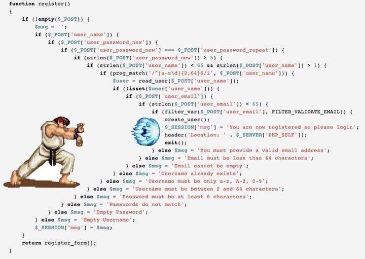

Goals
- 培养习惯 —— 安全、高效、可维护
- 消除隐患 —— 泄露、崩溃、逻辑错误
- 不用纠结 格式，让工具 自动格式化
- 使用现代 C++ (not your father’s C++)
References
Docs
- Google C++ Style Guide
- Chromium C++ Style Guide
- Chromium C++ Dos and Don’ts
- ISOCpp C++ Core Guidelines
Tools
Google Style
Self-contained Headers
|
|
- 来源
- SF.10: Avoid dependencies on implicitly
#included names
- 可以通过
cpplint --filter=+build/include_what_you_use检查（然后再手动加上）- SF.11: Header files should be self-contained
- 可以通过
foo.cc首先引用foo.h检查（参考：[sec|Names and Order of Includes]）
#define Guard
|
|
- 来源
- SF.8: Use
#includeguards for all.hfiles- 可以通过
cpplint --root=PATH检查（然后复制出来）- 不推荐使用非标准的
#pragma once
Forward Declarations
|
|
- 来源
- SF.9: Avoid cyclic dependencies among source files
- 正方观点：节省编译时间，避免重新编译，消除循环依赖（Chromium Style 支持）
- 反方观点：隐藏依赖关系，可能错误重载基类和派生类参数，不能前向声明嵌套类（Google Style 不支持）
- 对于值类型的类成员变量，不要为了 前向声明 改用为指针类型（Chromium Style）
Names and Order of Includes
|
|
- 来源
- SF.5: A
.cppfile must include the.hfile(s) that defines its interface
- 只能编译时检查 函数返回值、类的成员函数 是否匹配
- 不能编译时检查 函数参数 是否匹配
- 不同参数视为重载，链接时检查
- 可利用 名字空间限定符 (namespace qualifier) 在编译时检查（参考：Use Namespace Qualifiers to Implement Previously Declared Functions）
- 顺序：自身头文件 + 空行 + C/系统头文件 + 空行 + C++ 库 + 空行 + 其他库/当前项目
Namespaces
|
|
- 来源 1 / 来源 2
- SF.6: Use
using namespacedirectives for transition, for foundation libraries (such asstd), or within a local scope (only)（Google Style 不允许）
- 反例：TarsCpp
using namespace std;导致namespace promise和std::promise冲突（TarsCpppromise已被移除）- SF.7: Don’t write
using namespaceat global scope in a header file- 不要使用
inline namespace
Unnamed Namespaces and Static
|
|
Use of sizeof
|
|
- 来源
- 如果和变量有关，尽量使用
sizeof(varname)，而不是sizeof(type)（因为类型会被修改，但不易察觉）
Preincrement and Predecrement
|
|
- 来源
- 尽量使用
++i/--i，避免使用i++/i--生成不需要的临时对象（如果需要，可以使用）
Pointer and Reference Expressions
|
|
- 来源
- ES.10: Declare one name (only) per declaration（Google Style 没有限制）
- NL.18: Use C++-style declarator layout（Google Style 没有限制）
Use of const/constexpr
|
|
- 来源 1 / 来源 2
- Con.2: By default, make member functions
const
- 锁、缓存 等数据成员可以使用
mutable（逻辑const即可）- Con.3: By default, pass pointers and references to
consts- Con.4: Use
constto define objects with values that do not change after construction（Google Style 没有限制）
- 在复杂逻辑中，使用
const可以避免错误- 可以使用 lambda 初始化，避免污染（参考：[sec|Lambda for Complex Initialization]）
- Con.5: Use
constexprfor values that can be computed at compile time- ES.50: Don’t cast away
const
Local Variables
|
|
Constructors
|
|
- 来源
- NR.5: Don’t use two-phase initialization
- C.41: A constructor should create a fully initialized object
- 如果 允许异常，C.42: If a constructor cannot construct a valid object, throw an exception（Google Style 不允许）
- 如果 禁用异常，可以使用 工厂方法
Create()支持构造失败
- 建议返回 智能指针（参考：[sec|Smart Pointers Ownership]）保存多态对象（参考：[sec|Polymorphic Classes Slicing]）
- 不要同时提供
public构造函数 和 工厂方法（参考：Don’t mixCreate()factory methods and public constructors in one class）- C.82: Don’t call virtual functions in constructors and destructors
- C.50: Use a factory function if you need “virtual behavior” during initialization
Structs vs. Classes
|
|
Access Control
|
|
Implicit Conversions
|
|
- 来源
- C.46: By default, declare single-argument constructors explicit
- C.164: Avoid implicit conversion operators
- 尤其是 隐式转换 + 异常 容易出错（参考：[sec|Exceptions]）
Copyable Types (Movable)
|
|
- 来源
- 可拷贝（可移动）：可以写
copy = default;和move = default;- 最好都不写（C.20: If you can avoid defining default operations, do）
Copyable Types (Not Movable)
|
|
- 来源
- 可拷贝（不可移动）：只需要写
copy = default;，不需要写move = delete;
MoveOnly Types
|
|
- 来源
- 仅移动（不可拷贝）：只需要写
move = default;，不需要写copy = delete;
Not Copyable Or Movable Types
|
|
- 来源
- 不可拷贝或移动：只需要写
copy = delete;，不需要写move = delete;- 最好都写（C.21: If you define or
=deleteany default operation, define or=deletethem all）
Declaration Order
|
|
- 来源
- NL.16: Use a conventional class member declaration order
- 顺序：
public+protected+private（空则不写）- 类型（
typedef/using/嵌套类）+ 常量（constexpr/enum）+ 工厂方法 + 构造函数 + 构造函数（拷贝/移动）+ 赋值函数（拷贝/移动）+ 析构函数 + 成员函数（静态/方法）+ 数据成员（静态/普通）- 注意：
- 在类定义中，可以内联定义 accessor(getter)、mutator(setter) 和 空函数
- 不要定义长函数，不需要显式
inline（参考：Don’t useinlinewhen defining a function in a class definition）- 建议在 静态成员（函数/数据）上一行加
// static注释，可在代码折叠后方便查看
Inheritance
|
|
- 来源
- C.128: Virtual functions should specify exactly one of
virtual,override, orfinal- C.129: When designing a class hierarchy, distinguish between implementation inheritance and interface inheritance
- C.135: Use multiple inheritance to represent multiple distinct interfaces
- C.136: Use multiple inheritance to represent the union of implementation attributes（Google Style 不允许）
- 编译器无法检查 C.140: Do not provide different default arguments for a virtual function and an overrider
- 避免使用
private和protected继承
Parameters and Arguments
|
|
- 来源 1 / 来源 2 / 来源 3
- F.15: Prefer simple and conventional ways of passing information
- 分类 1：拷贝代价低、不可拷贝（一般传 值）
- 分类 2：移动代价低、移动代价中、通用类型
- 分类 3：移动代价高（一般传 指针/引用）
- 不为空的输入参数：
T可变 /const T&不变（F.16: For “in” parameters, pass cheaply-copied types by value and others by reference toconst）- 一般不需要
const T参数（Google Style 没有限制，参考：[sec|Use ofconst/constexpr]）- 可为空的输入参数：
T*可变 /const T*不变（F.60: PreferT*overT&when “no argument” is a valid option）- 右值引用参数：
- 输入/输出参数：
T*（Google Style）T&（F.17: For “in-out” parameters, pass by reference to non-const）- 输出参数：
T*（Google Style）- 不提倡，可通过 返回值 输出结果（F.20: For “out” output values, prefer return values to output parameters）
- 不提倡，可通过 多个返回值 输出结果（F.21: To return multiple “out” values, prefer returning a struct or tuple）
- 可能需要判空，容易遗漏输出逻辑
Smart Pointers Ownership
|
|
Smart Pointers Parameters
|
|
- 来源
- R.30: Take smart pointers as parameters only to explicitly express lifetime semantics
- R.32: Take a
unique_ptr<widget>parameter to express that a function assumes ownership of awidget- R.33: Take a
unique_ptr<widget>¶meter to express that a function reseats thewidget（Google Style 不允许，改用指针）- R.34: Take a
shared_ptr<widget>parameter to express that a function is part owner- R.35: Take a
shared_ptr<widget>¶meter to express that a function might reseat the shared pointer（Google Style 不允许，改用指针）- R.36: Take a
const shared_ptr<widget>¶meter to express that it might retain a reference count to the object ???- 返回值 原则相同
Lambda expressions
|
|
- 来源
- F.50: Use a lambda when a function won’t do (to capture local variables, or to write a local function)
- 不要滥用全局 lambda（如果可以定义函数）
- 一个问题在于
__FUNCTION__只能拿到operator() const- F.52: Prefer capturing by reference in lambdas that will be used locally, including passed to algorithms
- F.53: Avoid capturing by reference in lambdas that will be used nonlocally, including returned, stored on the heap, or passed to another thread（参考：回调时上下文会不会失效）
- F.54: If you capture
this, capture all variables explicitly (no default capture)- 不要滥用 初始化捕获 (init capture)
- 如果不依赖于 闭包作用域 (enclosing scope)，可以推迟到 lambda 内构造（但要考虑一份还是多份）
- 仅用于
std::move()不可拷贝的对象（参考：[sec|MoveOnly Types]）
Exceptions
|
|
- 来源
- 反方观点：避免使用异常，使用显式的错误处理，降低心智负担
- 是否会抛出异常 不能在 编译时检查 ??
- 抛出异常的类型 不能在 编译时检查 ??
- 难以确定 抛出来源（默认只有
.what()，没有.stack()）
- 例如 隐式转换
std::string detail = json_object;（忘了加.dump()）抛出异常[json.exception.type_error.302] type must be string, but is object- 因为 一般认为此处不会抛异常，但又被外层
try-catch捕获，导致无法定位来源（未捕获的异常 一般可以看到调用栈）- 另外 上层逻辑往往不希望看到 最原始的异常，而希望拿到 更有意义的异常（例如
type of |json_object| must be string, but is object）- 容易混淆 异常 和 错误
- 例如
const Value& Path::resolve(const Value& root) const;可能 抛异常，也可能 返回 null 的 singleton 引用- 容易混淆 异常 和 契约（参考：[sec|Contracts]）
- 正方观点：NR.3: Don’t avoid exceptions
Run-Time Type Information (RTTI)
|
|
- 来源
- 反方观点：C.153: Prefer virtual function to casting
- 正方观点：C.146: Use
dynamic_castwhere class hierarchy navigation is unavoidable
- C.147: Use
dynamic_castto a reference type when failure to find the required class is considered an error（Google Style 不允许，禁用异常）- C.148: Use
dynamic_castto a pointer type when failure to find the required class is considered a valid alternative（参考：Capability Query）- 用于实现 Acyclic Visitor（Robert C. Martin 提出）
Line Length: 80 columns
|
|
- 来源

- 如果超过 80 列，先检查：
- 格式上，是否存在 4 空格缩进？
namespace缩进（参考：[sec|Namespaces]）？- 逻辑上，是否存在 箭头型代码？callback hell？
- 尤其是
while/for嵌套的switch：
break作用于switchcontinue作用于while/for
Naming & Formatting
[img=max-width:88%]
Chromium Style
Variable Initialization
|
|
- 来源
- 优先级：赋值写法 > 构造写法 > C++ 11
{}写法（仅当前两种写法不可用时，例如Bar bar(std::string());会导致 most vexing parse 歧义）- 不同观点：
- Google Style 没有限制
- ES.23: Prefer the
{}-initializer syntax
In-class Initializers
|
|
Prefer =default
|
|
- 来源
- C.80: Use
=defaultif you have to be explicit about using the default semantics- 拷贝构造函数 参数
const T&容易误写为T&
- 导致 无法重载右值参数（编译器允许？）
- 赋值函数 更容易写错：
- 定义为
virtual/参数为T&/不返回T&- 没检查参数是否
== this- 移动构造函数 容易漏掉
noexcept（=default会自动加上）- I.27: For stable library ABI, consider the Pimpl idiom
auto* p = ...;
|
|
- 来源
- 增强可读性 + 检查
item必须为 指针类型- Beware unnecessary copies with
auto
Comment Style
|
|
- 来源
TODO(xxx)待办 要关联信息（Google Style）FooImpl/FooBase类名FooFunction函数后加()foo_member_变量外加||
Core Guidelines
Intent
|
|
- P.1: Express ideas directly in code
- P.3: Express intent
- NL.1: Don’t say in comments what can be clearly stated in code
- 封装统一的
base::Contains(c, v)语义：
- 字符串
s.find(v) != S::npos- 线性容器
std::find(c, v) != c.end()- 关联容器
c.find(v) != c.end()（P0458R2）- Turn Predicate Loops into Predicate Functions
Names and Scopes
|
|
Virtual Destructors
|
|
Polymorphic Classes Slicing
|
|
- ES.63: Don’t slice
- C.67: A polymorphic class should suppress copying
- C.130: For making deep copies of polymorphic classes prefer a virtual clone function instead of copy construction/assignment
- C.145: Access polymorphic objects through pointers and references
- 设计多态类时，一定要考虑：
- [sec|Copyable Types (Movable)]
- [sec|Copyable Types (Not Movable)]
- [sec|MoveOnly Types]
- [sec|Not Copyable Or Movable Types]（常用
DISALLOW_COPY_AND_ASSIGN）
RAII
|
|
Smart Pointers Dangling
|
|
- 来源
- R.37: Do not pass a pointer or reference obtained from an aliased smart pointer
- 仅在 多线程/协程 等并发环境下可能悬垂
std::shared_ptr通过 原子性引用计数 (atomic ref-count) 保证 引用对象的析构过程 线程安全
Contracts
|
|
Lambda for Complex Initialization
|
|
- ES.28: Use lambdas for complex initialization, especially of
constvariables- 不能直接用 C++ 11
{}写法构造（因为std::unique_ptr不可拷贝）